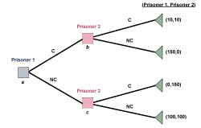

Evolved for suboptimal decision making?

I *should* be searching out and evaluating Python geometry libraries. But I keep getting these niggling impulses to start hammering out my own vector, polygon and quaternion classes. Possibly in C. Ohdear.
Why is it so much easier, or at least so much more appealing, to start beavering away on your own code, rather than to take the sensible approach of evaluating existing libraries? A couple of hours searching could save you days, weeks or months of work, and libraries written and used by several people will undoubtedly be of higher quality as well - it should be a no-brainer.
It's easy enough to conjure up subjective justifications for it on a personal level, but to my mind they rarely hold up to scrutiny. Reading and understanding other people's code is said to be harder than churning out some according to your own vision, but surely the depth of understanding required to use a module should surely be substantially less than it would take to write it? Likewise, curiosity, obsessiveness, a sense of personal achievement play a part, but these motives are deeply subjective, and cannot be used to argue the case that 'rolling your own' is an efficient or rational decision, merely an enjoyable (or compulsive) one. Expectations of quality also contribute - everyone thinks that their own code is better. But this is rarely really the case, and experienced practitioners recognise it.
On a deeper level, then, why does some part of us allow these inadequate justifications to hold sway? Even if rationally, we know it doesn't make sense, why does it feel so desirable? What I'm really asking is, why have we been evolved to want to build our own, even though it is so clearly the wrong thing to do?
What if we are tuned, as individuals, to prematurely settle on our own idiosyncratic approach? The net result would be that, for any given problem, a flurry of individuals would each set out in different directions, regardless of what results others might have already achieved. Viewed as a group activity, this starts to sound a little saner. Such a dispersion of individuals would rapidly and thoroughly explore all the corners of the problem space. Compared to the situation where we all just build cumulatively on what everyone else has done before, the chances of any one individual finding an optimal answer is low, but the chances of someone in the group finding it is greatly increased.
It's a survival-of-the-group trait, that each of us is evolved to pick a wrong-looking answer, and then expend ourselves beavering away to prove it. Oh dear indeed.
Comments